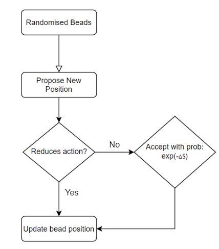
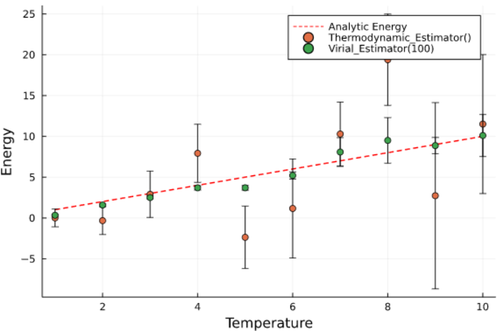

Part of my research project during my time at the Solid State Physics group at Imperial College London. The project was to develop a Julia package capable of simulating the quantum many body system of Polarons. Polarons are a type of Quasi-particle, that form from the coupling of electrons (or holes) with lattice vibrations. Polarons are abundant in almost all materials and have profound effects on the properties of the material. The understanding of polarons is especially useful for the development of renewable materials.
| Overview |
|---|
Overview of the PIMC Method
One method of obtaining dynamics of polarons is to solve the Frohlich Hamiltonian. This can be done by using the path integral method developed my Richard Feynman, splitting the polaron in a series of 'beads', each representing it at a point in imaginary time. By conducting the path integral across these beads, we are able to obtain properties of the polarons. This approach applied to polarons has barely been attempted in the literature. We initialise the system with the beads distributed randomly in 3D space. We then apply the Metropolis algorithm to update the position of the beads in hopes of minimising energy. After an initial burn-in time, observables are sampled periodically using estimators. The final observable obtained is an average of the array of observable samples.
The core Metropolis algorithm
Technical challenges
Estimators
The use of suitable estimators to obtain desired observables, and to provide accurate and descriptive errors on the observable values is crucial. The main observable of interest is the binding energy of the polaron. The initial estimator used was the thermodynamic estimator. However, the thermodynamic estimator suffered from large kinetic fluctuations when the system is at high temperatures. To address this issue, the virial estimator is used which averages out the kinetic energy fluctuations. However the virial estimator required the spatial derivative of the potential, and required additional optimisation. (Mentioned later)
The stability of Virial estimator with higher temp vs. thermodynamic estimator
Burn-in time and thermalisation
Another important factor regarding the accuracy of observables is the burn-in time of the system. Or the time it takes for the system to thermalise before meaningful observations could be made. This was taken into account by only obtaining observables after 50% of total monte-carlo steps have been completed.
Sampling algorithms
The simplest sampling algorithm is a single bead sampler, which visits individual beads at random and attempts to update their positions according to the Metropolis algorithm. However this method is inefficient at exploring phase space. Hence much more advanced sampling algorithms have been developed to increase the speed and efficiency. The most sophisticated of which is the Bisection algorithm, which takes advantage of a Levy bridge and is able to explore areas of greater errors before investigating areas that are most likely to have already been optimised.
From left to right: Single, Displace and Bisect Sampling methods. (Same frame rate)
Acceptance rate adjustment
Furthermore, for the efficient exploration of phase space, we want to control the acceptance rate of attempted moves. The acceptance rate should be around 50% to make sure that we are not attempting overly large moves and also not trapped in a local minimum. To do this, the shift width of each proposed move is coded to be auto adjusting, so that it decreases if moves are rejected too often and vice versa.
Optimisation for efficiency and parallelising
The Frohlich potential affecting each bead required an inner integral which depends on the position of every other bead, this is extreme computationally intensive to have within the inner loop of a monte carlo simulation. Hence, graph theory concepts of adjacency matrices and adjacency lists were deployed so that only a sub group of beads needed to be updated for each step. Caching of variables was also used intensively to prevent inner loop calculations. Furthermore, in later stages the package was optimised for parallel computing, as it needed to be ran on Archer2, UK's national supercomputer. This required the restructuring of code to avoid thread locking, and to take better advantage of multi-threading.

End Product
The final package is capable of simulating a system of Polarons, and obtaining its wavefunction, correlation function and binding energy. The results are comparable to results obtained by variational theory. Package is currently available on Github.
Testing on Toy Potentials
Harmonic Oscillators
Wavefunctions of Harmonic Oscillators with varying width (Wide to Thin)
Visualisation of the optimisation of bead position for the two harmonic oscillator potentials.
Mexican Hat Potential
Visualisation of the optimisation of bead position for a mexican hat potential.
Result on Frohlich Potential Hamiltonian

Ground state wavefunction of a Frohlich Polaron and its optimisation visualisation.
The energy of the Polaron for different electron-phonon coupling coefficients. (PIMC results compared with variational theory results.)